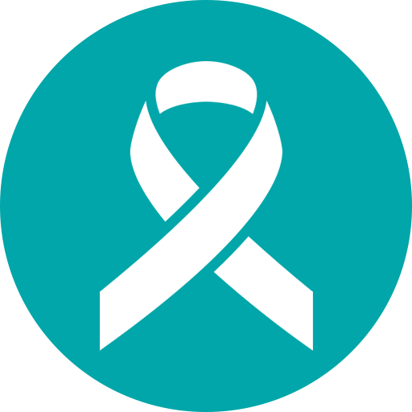
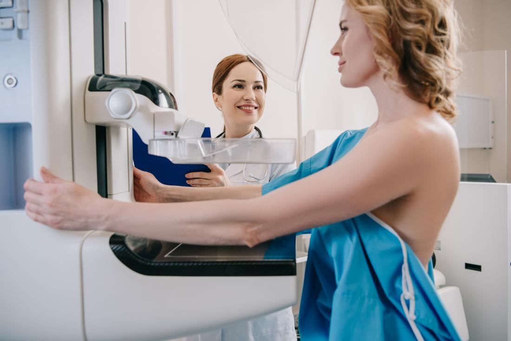

Cáncer de CervixPrevención, detección temprana y cuidado integral
El cáncer de cuello uterino es un tipo de cáncer que se
produce en las células del cuello uterino, la parte inferior
del útero que se conecta con la vagina.
Varias cepas del virus del papiloma humano (VPH), una infección
de transmición sexual, juegav un papel importante en la cusa
de la mayoría de tipos de cáncer de cuello uterino.
Cuando se expone al virus del pailoma humano, el sistema
Sangrado vaginal después de las relaciones sexuales, entre períodos o después de la menopausia.
Flujo vaginal acuoso y con sangre que puede ser abundante y tener olor fétido.
Dolor pélvico
Dolor durante relaciones sexuales
Vacuna contra el VPH
Citología periódica
Prueba ADN-VPH
Uso de protección
No fumar
